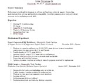

About Me
I am a junior developer seeking an entry level position. I have a Bachelor's degree in Information Technology. I majored in applications and software development. I have experience working with HTML, CSS, PHP, MySQL, Javascript, and JQuery in a professional environment. I enjoy coding and learning about other technology in my free time.
On top of the technolgies listed above, in the classroom I have experience working with Java and C++. Java was the language that I learned on in school and I fully intend to refine my Java knowledge. I taught myself a little bit of Python at home through a textbook, but have not really used it to make anything.
I am currently working as an IT support technician. I am an A+ certified technician. I have experience repairing PCs, troubleshooting hardware issues, and working with the ServiceNow ticketing system. I have helped friends and family members troubleshoot and fix computer issues as well. A majority of my computer hardware knowledge is self taught through studying for the A+ exam, watching youtube videos, and taking courses on Udemy's website.
This is my work portfolio that I coded myself using HTML, CSS, and PHP. You can find my newest work at the top of the projects section. You can find some of my old school work at the bottom of that section. Please keep in mind that the work I did in school is old and some of it did not come out too well. I may work on making these look nicer in the future, but they don't provide a lot of real world value as the sites are not meant to actually be used. They are theoretical websites. You can also find the code for these projects on my Github page. These old projects were coded in the strict version of xhtml. You can find some of my graphics that I created on the graphics page using Adobe Fireworks and Gimp.
Click on the thumbnail below to view my resume:
